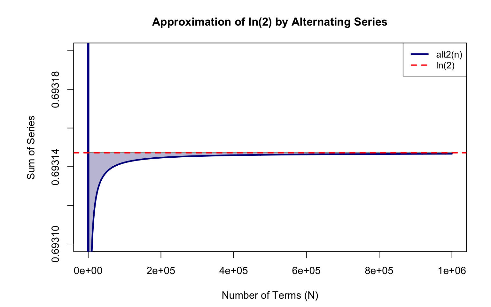
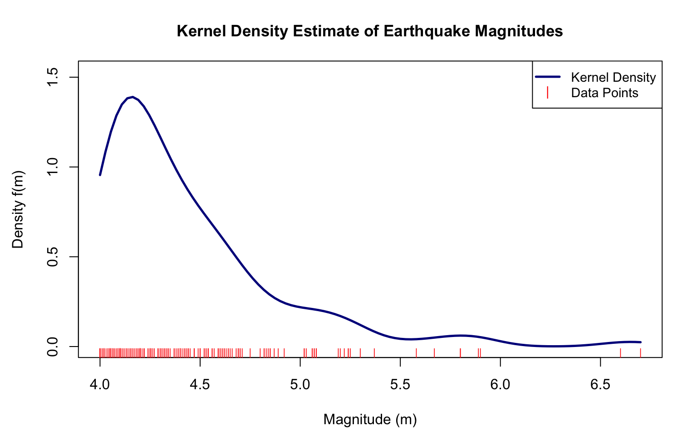
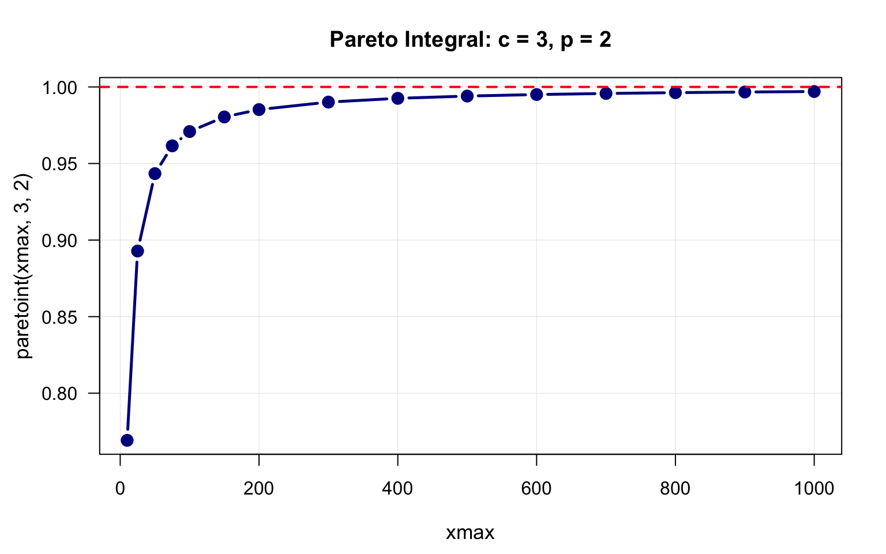
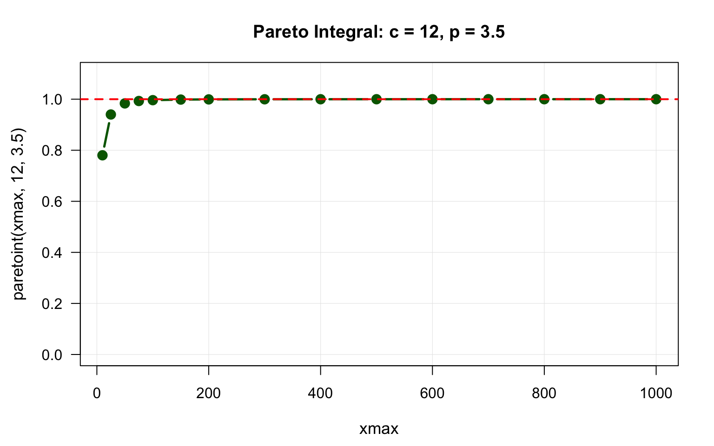
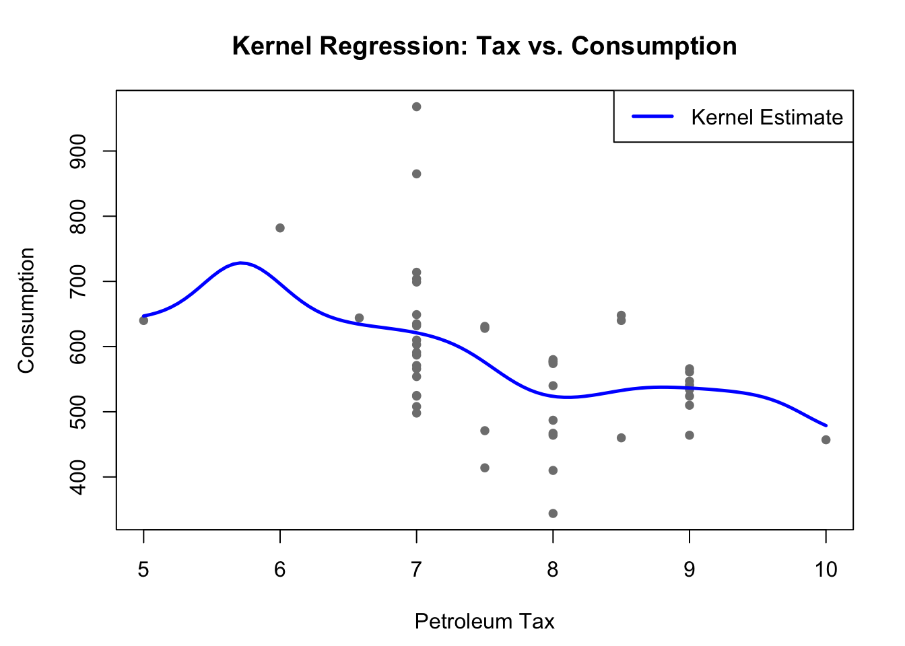
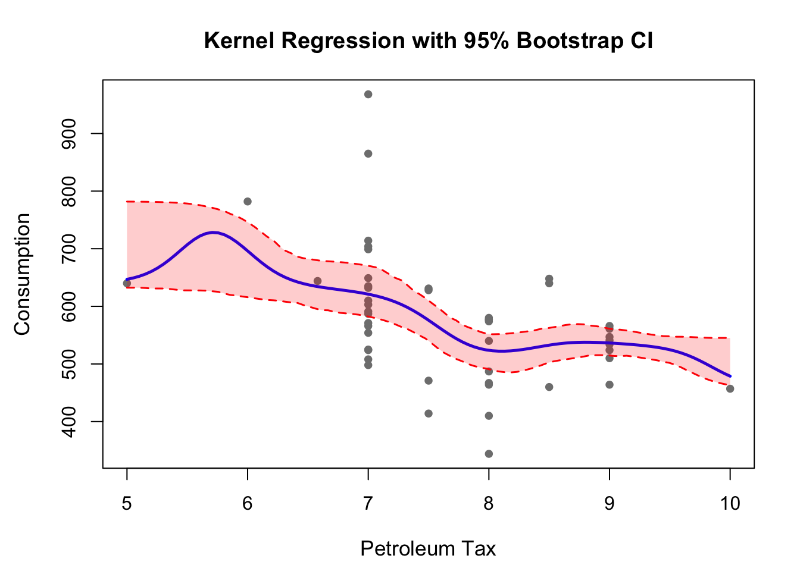

# Install Rcpp package
install.packages("Rcpp")1. Introduction
In data analysis and statistical computing, R is an excellent language for its expressiveness and extensive statistical libraries. However, R can be slow for certain computationally intensive tasks. This is where calling C or C++ from R becomes valuable.
In this tutorial, we’ll explore:
- Why we need to call C from R
- When to use C instead of pure R
- How to implement C functions using Rcpp
- Real-world examples with performance comparisons
This tutorial builds on our previous kernel density estimation post, where we implemented algorithms in R. Now, we’ll see how to accelerate these computations using C.
2. Why Call C from R?
Performance Comparison
R is an interpreted language, which makes it flexible but slower for certain operations. C is a compiled language that runs much closer to the hardware, making it significantly faster for:
- Loops: Especially nested loops or loops with millions of iterations
- Numerical computations: Heavy mathematical calculations
- Memory-intensive operations: When you need fine control over memory
- Recursive algorithms: Where function call overhead matters
Speed gains: C can be 10x to 1000x faster than R for loop-heavy computations.
When to Use C from R
*Use C when:**
- You have loops that iterate millions of times
- You’re performing the same simple operation repeatedly
- Profiling shows a specific R function is a bottleneck
- You need numerical precision or memory efficiency
- Existing R functions are too slow for your application
*Don’t use C when:**
- Vectorized R code already runs fast enough
- You’re doing exploratory data analysis
- The bottleneck is I/O (reading/writing files)
- The code complexity isn’t worth the speedup
- R packages already provide optimized solutions
3. Getting Started with Rcpp
Installation
Your First C Function in R
Let’s start with a simple example: computing the sum of numbers from 1 to n.
library(Rcpp)
# Pure R version
sum_r <- function(n) {
total <- 0
for(i in 1:n) {
total <- total + i
}
return(total)
}
# C++ version using Rcpp
Rcpp::cppFunction("
double sum_cpp(int n) {
double total = 0.0;
for(int i = 1; i <= n; ++i) {
total += i;
}
return total;
}
")
# Test both versions
n <- 1000000
system.time(result_r <- sum_r(n)) user system elapsed
0.009 0.000 0.009 system.time(result_cpp <- sum_cpp(n)) user system elapsed
0.000 0.001 0.000 Key differences:
- C++ requires type declarations (
double,int) - Array indexing starts at 0 in C, 1 in R
- C++ uses
++ifor increment, R usesi + 1
4. Example 1: Alternating Series Convergence
Problem
Compute the alternating harmonic series: 1 - 1/2 + 1/3 - 1/4 + … = ln(2)
This is a good example because:
- It requires a loop with millions of iterations
- Each iteration is a simple calculation
- It demonstrates convergence visualization
Implementation
# C function to compute first n terms
Rcpp::cppFunction("
double alt2(int n) {
double total = 0.0;
for(int i = 1; i <= n; ++i) {
total += pow(-1.0, i + 1) / i;
}
return total;
}
")
# Test the function
cat("alt2(10) =", alt2(10), "\n")alt2(10) = 0.6456349 cat("alt2(100) =", alt2(100), "\n")alt2(100) = 0.6881722 cat("alt2(1000) =", alt2(1000), "\n")alt2(1000) = 0.6926474 cat("alt2(1000000) =", alt2(1000000), "\n")alt2(1000000) = 0.6931467 cat("ln(2) =", log(2), "\n")ln(2) = 0.6931472 Visualization
# Create sequence of n values
n <- unique(c(
seq(1, 100, by = 1),
seq(105, 1000, by = 5),
seq(1010, 10000, by = 10),
seq(10050, 100000, by = 50),
seq(100500, 1000000, by = 500)
))
# Compute values
alt2_vals <- sapply(n, alt2)
ln2 <- log(2)
# Create plot
par(mar = c(4.5, 6, 3.5, 2))
plot(n, alt2_vals,
type = "n",
xlab = "Number of Terms (N)",
ylab = "Sum of Series",
main = "Approximation of ln(2) by Alternating Series",
xlim = c(0, 1e6),
ylim = c(0.6931, 0.6932),
las = 0,
cex.lab = 1.0,
cex.main = 1.1)
# Shaded area shows convergence
polygon(c(n, rev(n)),
c(alt2_vals, rep(ln2, length(n))),
col = rgb(0.5, 0.5, 0.7, 0.5))
lines(n, alt2_vals, col = "darkblue", lwd = 2.5)
abline(h = ln2, col = "red", lwd = 2, lty = 2)
legend("topright",
legend = c("alt2(n)", "ln(2)"),
col = c("darkblue", "red"),
lty = c(1, 2),
lwd = c(2.5, 2),
bg = "white",
cex = 0.9)
Key insight: The series converges slowly, requiring about 1 million terms to get within 0.0000005 of ln(2). Computing this in pure R would be much slower.
5. Example 2: Kernel Density Estimation
Problem
Compute kernel density estimates for earthquake magnitude data using a Gaussian kernel.
Why C? With n=223 data points and m=100 grid points, we perform 22,300 kernel evaluations. For larger datasets (n=10,000, m=500), that’s 5 million calculations.
Loading the Data
library(ggplot2)
# Load earthquake data
data <- read.table(file = "SearchResults.txt", sep = "", skip = 2, fill = T)
colnames(data) <- c("DATE", "TIME", "ET", "GT", "MAG", "M", "LAT",
"LON", "DEPTH", "Q", "EVID", "NPH", "NGRM")
magnitudes <- data$MAG
cat("Number of earthquakes:", length(magnitudes), "\n")Number of earthquakes: 219 cat("Magnitude range:", sprintf("[%.2f, %.2f]", min(magnitudes), max(magnitudes)), "\n")Magnitude range: [4.00, 6.70] C Implementation
Rcpp::cppFunction("
NumericVector kernel_density(NumericVector g, NumericVector x, double h) {
int m = g.size(); // number of grid points
int n = x.size(); // number of data points
NumericVector y(m); // output density estimates
double sqrt_2pi = sqrt(2.0 * M_PI);
// For each grid point
for(int i = 0; i < m; ++i) {
y[i] = 0.0;
// Sum contributions from all data points
for(int j = 0; j < n; ++j) {
double z = (g[i] - x[j]) / h;
y[i] += exp(-0.5 * z * z) / (h * sqrt_2pi);
}
y[i] /= n; // Normalize
}
return y;
}
")C++ features used:
NumericVector: Rcpp’s vector type that interfaces with R.size(): Method to get vector length- Nested loops: The inner loop runs n times for each of m iterations
- Mathematical functions:
sqrt(),exp(),pow()
Computing and Plotting
# Calculate bandwidth using Scott's rule
h <- bw.nrd(magnitudes)
cat("Bandwidth (Scott's rule):", sprintf("%.4f", h), "\n")Bandwidth (Scott's rule): 0.1319 # Create grid
g <- seq(min(magnitudes), max(magnitudes), length = 100)
# Call C function
y <- kernel_density(g, magnitudes, h)
# Create plot
kde_data <- data.frame(Magnitude = g, Density = y)
par(mar = c(4.5, 4.5, 3.5, 2))
plot(kde_data$Magnitude, kde_data$Density,
type = "l", col = "darkblue", lwd = 2.5,
xlab = "Magnitude (m)", ylab = "Density f(m)",
main = "Kernel Density Estimate of Earthquake Magnitudes",
cex.lab = 1.0, cex.main = 1.1,
ylim = c(0, max(kde_data$Density) * 1.1))
rug(magnitudes, col = "red", lwd = 0.8, ticksize = 0.03)
legend("topright",
legend = c("Kernel Density", "Data Points"),
col = c("darkblue", "red"),
lty = c(1, NA),
pch = c(NA, 124),
lwd = c(2.5, 1),
bg = "white",
cex = 0.9)
Performance Comparison
# R version for comparison
kernel_density_r <- function(g, x, h) {
m <- length(g)
n <- length(x)
y <- numeric(m)
sqrt_2pi <- sqrt(2 * pi)
for(i in 1:m) {
for(j in 1:n) {
z <- (g[i] - x[j]) / h
y[i] <- y[i] + exp(-0.5 * z^2) / (h * sqrt_2pi)
}
y[i] <- y[i] / n
}
return(y)
}
# Benchmark
cat("\nPerformance comparison:\n")
Performance comparison:system.time(y_r <- kernel_density_r(g, magnitudes, h)) user system elapsed
0.005 0.000 0.005 system.time(y_cpp <- kernel_density(g, magnitudes, h)) user system elapsed
0.001 0.000 0.001 6. Example 3: Numerical Integration
Problem
Approximate the integral of a shifted Pareto density:
\[f(x) = (p-1)c^{p-1}(x+c)^{-p}, \quad x \geq 0\]
Using the trapezoidal rule with 1 million grid points.
Implementation
Rcpp::cppFunction("
double paretoint(double xmax, double c, double p) {
int n = 1000000; // 1 million grid points
double dx = xmax / (n - 1);
double integral = 0.0;
// Coefficient: (p-1) * c^(p-1)
double coef = (p - 1) * pow(c, p - 1);
// Trapezoidal rule
double f0 = coef * pow(c, -p);
double fn = coef * pow(xmax + c, -p);
double sum_middle = 0.0;
for(int i = 1; i < n - 1; ++i) {
double x = i * dx;
double fx = coef * pow(x + c, -p);
sum_middle += fx;
}
integral = dx * (0.5 * f0 + sum_middle + 0.5 * fn);
return integral;
}
")Case 1: c = 3, p = 2
c1 <- 3
p1 <- 2
xmax_values1 <- c(10, 25, 50, 75, 100, 150, 200, 300, 400, 500,
600, 700, 800, 900, 1000)
integral_values1 <- sapply(xmax_values1, function(xm) {
paretoint(xm, c1, p1)
})
df1 <- data.frame(xmax = xmax_values1, integral = integral_values1)
par(mar = c(4.5, 4.5, 3.5, 2))
plot(df1$xmax, df1$integral,
type = "b", col = "darkblue", lwd = 2.5, pch = 19, cex = 1.2,
xlab = "xmax", ylab = "paretoint(xmax, 3, 2)",
main = "Pareto Integral: c = 3, p = 2",
las = 1, cex.lab = 1.1, cex.main = 1.2,
panel.first = grid(col = "gray90", lty = "solid", lwd = 0.5))
abline(h = 1, col = "red", lwd = 2, lty = 2)
Case 2: c = 12, p = 3.5
c2 <- 12
p2 <- 3.5
xmax_values2 <- c(10, 25, 50, 75, 100, 150, 200, 300, 400, 500,
600, 700, 800, 900, 1000)
integral_values2 <- sapply(xmax_values2, function(xm) {
paretoint(xm, c2, p2)
})
df2 <- data.frame(xmax = xmax_values2, integral = integral_values2)
par(mar = c(4.5, 4.5, 3.5, 2))
plot(df2$xmax, df2$integral,
type = "b", col = "darkgreen", lwd = 2.5, pch = 19, cex = 1.2,
xlab = "xmax", ylab = "paretoint(xmax, 12, 3.5)",
main = "Pareto Integral: c = 12, p = 3.5",
las = 1, cex.lab = 1.1, cex.main = 1.2,
ylim = c(0, max(df2$integral) * 1.1),
panel.first = grid(col = "gray90", lty = "solid", lwd = 0.5))
abline(h = 1, col = "red", lwd = 2, lty = 2)
Interpretation: Both integrals converge to 1 (shown by red dashed line), which is expected since we’re integrating a probability density function. The convergence is faster for larger c and p values.
7. Example 4: Nadaraya-Watson Kernel Regression with Bootstrap Confidence Intervals
This example demonstrates a more advanced application combining C functions with statistical inference. We’ll implement kernel regression to analyze the relationship between petroleum taxes and consumption, then use bootstrap methods to quantify uncertainty.
Problem
Given data on petroleum taxes (X) and consumption (Y), we want to:
- Estimate the relationship using Nadaraya-Watson kernel regression
- Compute bootstrap confidence intervals for the regression curve
- Visualize the results with uncertainty bands
C Implementation: Nadaraya-Watson Estimator
The Nadaraya-Watson estimator computes a weighted average of Y values at each grid point g:
\[\hat{f}(g) = \frac{\sum_{i=1}^{n} K\left(\frac{g - X_i}{b}\right) Y_i}{\sum_{i=1}^{n} K\left(\frac{g - X_i}{b}\right)}\]
where K is the Gaussian kernel and b is the bandwidth.
Rcpp::cppFunction("
NumericVector nadaraya_watson(int n, NumericVector X, NumericVector Y,
int m, NumericVector g2, double b) {
NumericVector res2(m);
// Compute kernel regression estimates at each grid point
for(int j = 0; j < m; j++) {
double numerator = 0.0;
double denominator = 0.0;
// Sum over all observations
for(int i = 0; i < n; i++) {
// Gaussian kernel: exp(-0.5 * ((x - xi) / b)^2)
double u = (g2[j] - X[i]) / b;
double kernel_weight = exp(-0.5 * u * u);
numerator += kernel_weight * Y[i];
denominator += kernel_weight;
}
// Compute the weighted average
if(denominator > 0) {
res2[j] = numerator / denominator;
} else {
res2[j] = NA_REAL;
}
}
return res2;
}
")Key implementation details:
- Nested loops: The outer loop iterates over m grid points, the inner over n observations
- Gaussian kernel: We use \(K(u) = \exp(-0.5u^2)\) without the normalizing constant (it cancels in the ratio)
- Numerical stability: Check for
denominator > 0before division - NA handling: Return
NA_REALfor grid points with no nearby data
Loading the Data
We’ll use petroleum tax and consumption data to illustrate the method:
# Petroleum taxes and consumption data
url <- "https://people.sc.fsu.edu/~jburkardt/datasets/regression/x15.txt"
data_raw <- readLines(url)
data_lines <- data_raw[grep("^\\s*[0-9]", data_raw)]
data_lines <- data_lines[-(1:2)]
data <- read.table(text = data_lines)
X <- data$V2 # Petroleum tax
Y <- data$V6 # Petroleum consumption
cat("Sample size:", length(X), "\n")Sample size: 48 cat("Tax range: [", min(X), ",", max(X), "]\n")Tax range: [ 5 , 10 ]cat("Consumption range: [", min(Y), ",", max(Y), "]\n")Consumption range: [ 344 , 968 ]Computing the Kernel Regression Estimate
n <- length(X)
b <- bw.nrd(X) # Scott's bandwidth rule
m <- 100
g2 <- seq(min(X), max(X), length.out = m)
# Compute kernel regression estimates
kernel_fit <- nadaraya_watson(n, X, Y, m, g2, b)
# Initial plot
par(mar = c(4.5, 4.5, 3.5, 2))
plot(X, Y, pch = 19, col = "gray50", cex = 0.8,
xlab = "Petroleum Tax", ylab = "Consumption",
main = "Kernel Regression: Tax vs. Consumption")
lines(g2, kernel_fit, col = "blue", lwd = 2.5)
legend("topright", legend = "Kernel Estimate",
col = "blue", lwd = 2.5, bg = "white")
Bootstrap Confidence Intervals
To quantify uncertainty in our estimates, we use the bootstrap:
- Resample: Draw n pairs \((X_i, Y_i)\) with replacement from the original data
- Refit: Compute kernel regression on the bootstrap sample
- Repeat: Do this B = 200 times
- Quantiles: At each grid point, compute the 2.5th and 97.5th percentiles
B <- 200 # Number of bootstrap samples
boot_mat <- matrix(NA, nrow = B, ncol = m)
# Bootstrap loop
for(i in 1:B) {
# Resample with replacement
idx <- sample(1:n, n, replace = TRUE)
X_boot <- X[idx]
Y_boot <- Y[idx]
# Compute kernel regression on bootstrap sample
boot_mat[i, ] <- nadaraya_watson(n, X_boot, Y_boot, m, g2, b)
}
# Compute confidence bounds
lower_ci <- apply(boot_mat, 2, quantile, probs = 0.025, na.rm = TRUE)
upper_ci <- apply(boot_mat, 2, quantile, probs = 0.975, na.rm = TRUE)Why bootstrap works here:
- Kernel regression is a smooth function of the data
- Bootstrap resampling preserves the joint distribution of (X, Y)
- Percentile method provides valid confidence bands under mild conditions
- The 200 bootstrap samples give stable percentile estimates
Final Visualization
par(mar = c(4.5, 4.5, 3.5, 2))
plot(X, Y, pch = 19, col = "gray50", cex = 0.8, main = "Kernel Regression with 95% Bootstrap CI",
xlab = "Petroleum Tax", ylab = "Consumption", cex.lab = 1.1, cex.main = 1.2)
lines(g2, kernel_fit, col = "blue", lwd = 2.5)
polygon(c(g2, rev(g2)), c(lower_ci, rev(upper_ci)), col = rgb(1, 0, 0, 0.2), border = NA)
lines(g2, lower_ci, col = "red", lty = 2, lwd = 1.5)
lines(g2, upper_ci, col = "red", lty = 2, lwd = 1.5)
8. Common Pitfalls
Array Indexing
// C++ uses 0-based indexing
for(int i = 0; i < n; ++i) { // 0 to n-1
x[i] = ...
}
// R uses 1-based indexing
for(i in 1:n) { // 1 to n
x[i] <- ...
}Integer Division
double result = 5 / 2; // Result: 2.0 (integer division)
double result = 5.0 / 2.0; // Result: 2.5 (correct)Power Functions
pow(-1, i) // Correct
(-1)^i // WRONG. ^ is XOR in C++, not exponentiationFurther Reading
- Rcpp Gallery: More examples
- Advanced R - Rcpp Chapter: Hadley Wickham’s guide
This tutorial is based on UCLA STATS 202A: Statistics Programming taught by Prof Rick Schoenberg.